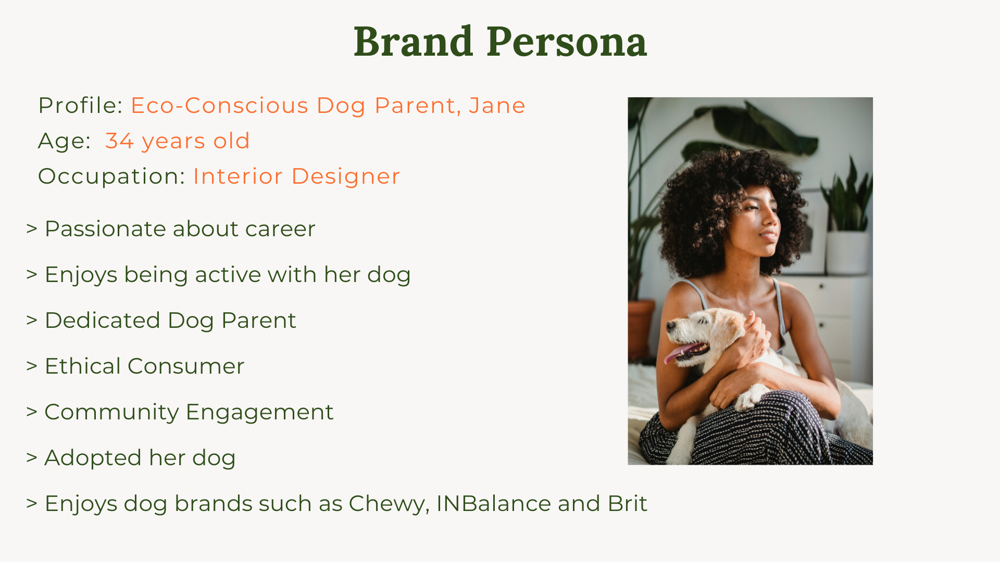
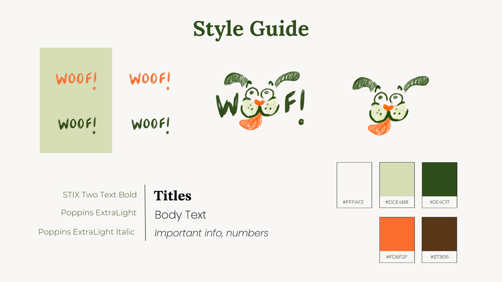

General Information
This extraordinary website is publicly available at https://eva121416.github.io/Woof.Website/
This website was created by:
- Student (ID: 223700)
- Student (ID: 225012)
- Student (ID: 220395)
- Student (ID: 236980)
Content
Our brand is called 'Woof!'
Here is our logo:


| # | Student ID | Material | Name and link of content |
|---|---|---|---|
| 1. | 236980 | Vision, values, brand persona |
Vision and Values Brand Persona |
| 2. | 220395 | Brand name, logo, style guide, supporting visuals (jars) |
Brand Name + Logo Style GuideJars |
| 3. | 223700 | Supporting visuals (rest of website) | Woof Website |
| 4. | 225012 | Description of jars | Jars |
Production
Design Elements
-
The two shades of green represent sustainability and our connection with nature. Green evokes feelings of freshness, growth, and harmony with the environment.
This light green gives the website a sense of lightness and freshness, and evokes a feeling of calmness, peace, and harmony with nature. It creates a pleasing background. - This dark green is used for contrast, and emphasis. It adds sophistication, stability, and reliability.
- This off-white colour symbolizes responsibility, cleanliness, and simplicity. Off-white provides a clean and sophisticated look for our brand, reflecting our commitment to transparency and responsibility for the products we create.
- This brown is associated with nature and the earth, highlighting our commitment to sustainability, zero waste practices and love for nature.
- Orange is positioned on the opposite to brown on the wheel of colors. It adds contrast and energy to our pallete. Orange represents positivity, playfulness, and friendliness, aligning with the vibrant and lively nature of dogs - thus the traits that the “pet parents” love about them (and our brand). It gives our brand a feeling of warmth and vitality. It will be used for key messages, calls to actions, and elements that the user should focus on.
- Grids: Grant us the ability to organize our vision and values, video header and so on neatly while also maximising the screen space. This works well with our fonts to give the user a clear layout, as if allowing them space to breathe as they maneuver through our pages.
- Containers: These are used to display our 4 values, the cards showing our products and our contact us form. All of these elements are rounded to give a playful and friendly feel, which is how we want to portray our brand.
- Carousel: Promotes user interaction by allowing them to click through our reviews. Makes the website more dynamic and playful which aligns with our brand personality and logo. This ties in with our marketing and communication strategy, where we want to convey our playful yet informative personality. The use of a carousel for this is to give the feeling that the reviews are never-ending, hence our brand is highly-accredited by our customers.
- Top navigation bar: It provides a consistent and familiar navigation experience across our website. The drop-down menu allows for easy access to the multiple parts on the Shop page.
- Contact form: Enables the user to give us feedback and connect with us on a personal level. It is a structured interaction point that guides users through the contacting process by asking for their name, email, etc.
- Buttons: Allow our users to take our dog food/treat personalization quiz and purchase our products. This is a dynamic way to communicate our unique value proposal, which is that we give our customers the ability to fully customize the dog food and treats they can purchase from us.
Our Colour Scheme
These colours together evoke a feeling of nature and health, which helps convey our values of high quality ingredients and full customization ability of dog food and treats, hence the perfect matching of products to optimise dog health.
Logo Design
The style of the line in our logo is intentionally free-flowing and dynamic to convey care-free spirit, and cheerfulness. It aims to evoke a sense of friendliness and playfulness. We wanted to give our logo and brand a feeling, often associated with running happily dogs (one of the reasons why dog parents love them) - spontaneity and "foolishness", highlighting the delight of a dirty but happy dog. Take a look here: Logo
Typography
Serif fonts for titles - This is strategically aligned with our brand's values and target audience preferences. Serif fonts convey a sense of reliability, authenticity, credibility, and trustworthiness, which resonates with millennials who prioritize scientifically proven actions and conduct thorough research before making purchases. By using serif fonts for titles, we aim to instill trust in our brand among millennials, emphasising our commitment to environmental responsibility and scientific research (Vlahos, 2023; Zain, 2023).
STIX Two Text - This is a distinct font that is great for titles. It demands attention without being overwhelming. See it here.
Poppins - This font has a very clear look. It is perfect for long body paragraphs, providing numbers and data. It is accessible as it is easy to read. Important text will be written in italics. See it here.
Tone of Voice
Our Tone of Voice is Semi-formal - Informative with the implementation of humor. It is playful.
Millenials’ ToV in communication and copywriting is direct, clever, and has a conversational style. Millennials love casual “write as I talk” copy, and they like to be straight to be point. This generation enjoys the implementation of memes, and popular cultural references, as well as the use of CAPS LOCK in social media posts, and emojis to express enthusiasm. Despite all this information, millenials can easily detect and reject copy/marketing attempts that feel pushy or inauthentic. Natural and genuine communication resonates the most with this demographic (Magalhães, n.d.).
User Interface
User interface patterns used:
Structure of Main Page
In the Shop page (our Main page), we start with our navigation bar. This is with our off-white colour and Poppins font to give it a clean appearance. Beneath that, we chose a video header as opposed to an image header as it is more attention-grabbing. The video is of a dog to communicate that our brand is related to dogs and is for our target group - dog owners. The dog is wagging its tail which shows that it's happy, therefore implying that our brand will also make dogs happy. There is text over this video header that communicates our main feature and unique value proposal - the personalization of dog nutrition. We added a button for users to complete the quiz so they can immediately receive our service by pressing on it. Once the quiz is completed, the user is redirected to a product page of the product best for their dog. This is currently non-functional in the website but this is the idea of it. We then move into a part where users can shop our bestsellers, to give them an idea of what our products look like. For previous users, this is an easier way of purchasing a product they've previously purchased, without having to complete the quiz again. Then we move on to reviews, to boost our credibility as a brand. The contact form afterwards is to show customers that our brand is receptive to feedback and that we are open to forming a more personal connection with them. All of the titles are underlined with orange as this is our most eye-catching colour and grabs the user's attention while scrolling.
Structure of 'Why Woof?' Page
In the 'Why Woof?' page, we share our brand vision and values. This is done to advocate for ourselves as a brand and show people using our website why they should purchase from us. We start with a photo of a dog, to tie into our target group - dog owners. Then we state our vision, which has its own container on the page and it is in the center. This makes it feel like more of an important element, which encourages users to read it. It is underlined by a dark green to demand attention to it. Orange was not chosen for this as it is a less serious colour as compared to dark green, and for our vision we want to show that this section of our website is more serious. Additionally, the borders for the values below are orange and having the vision underlined in orange too would take away from this. The values below it are arranged in a zig-zag pattern to make this section more visually appealing. Every value is accompanied by an image that matches the copy, to communicate the values visually as well. The borders of the containers of the values are in our orange, as this contrasts well with the light green background and makes the values stand out.
Structure of 'Our Stores' Page
In the 'Our Stores' page, there is only an image banner, the same one as in 'Why Woof?'. This page was created so that all parts of the navigation bar were functional, however it was not developed as it is part of future devleopment.
Credits
- The source code for the video container is from Rob Verhagen (Thank you Rob! :D)
- The source code for the alignment of containers and grids is from Stack Overflow Forum
- The source code for the 'Contact us' section is from W3Schools
- The source code for the CSS text-shadow property is from W3Schools
- Main dog video Evgenia Kirpichnikova via Pexels
- Main dog photo Camylla Battani via Unsplash
- Individuality Value photo PicsbyFran via Pixabay
- Dog parent community Value photo 5688709 via Pixabay
- Woofing truthfully Value photo huoadg5888 via Pixabay
- Quality ingredients Value photo Larisa-K via Pixabay
- Carousel photo one Daniel Lloyd Blunk-Fernández via Pixabay
- Carousel photo two Karsten Winegeart via Pixabay
- Carousel photo three Tran Mau Tri Tam via Pixabay
Code Credits
Image & Video Credits
Testing Report
- Is the Navigation Bar easy to use?
- Do the names of the different pages make sense to the user?
- Does the user know how to use the elements shown (button, cards, carousel)?
- Does the user think that these elements make sense?
- Does the user understand what our brand is about?
- Is the website cohesive?
- We tested our website with 6 participants at BUas. They were all dog owners.
- The testing was recorded with video using a phone. The videos are in the following OneDrive link: https://eva121416.github.io/Woof.Website/
- 3 of our participants tested the website on a computer and the other 3 on a mobile phone. Instructions given:
- Find out which type of food is best for your dog.
- Please navigate to the page where you would find more information about the backstory of our brand.
- Check our reviews and read through them.
- Reach out to us about a concern.
- Purchase the carrot and lamb food.
- Please describe your experience with our website.
- Please describe what you think our brand is about.
- What do you think about the colours? Do they match the content?
- Is there anything that you think we should add?
Our testing goals:
Our testing protocol:
- After asking the testers to “purchase the “Carrot and Lamb” treats, they all scrolled to our bestsellers section of our website and clicked “Buy Now” under the correct jar.
- We asked testers to “find out what is the best food for your dog”. For five of them, it was clear that they had to go to our quiz, as they immediately did so. However, one of them went to the bestsellers/jars that we have on our website, read the descriptions, and made the choice that the “Beetroot and Lamb” treats were best for their dog, as their dog likes those flavours.
- When asked to reach out to us, five testers immediately scrolled down to the “Woof to us” section of our website, or clicked on this in the navigation bar, which told us that it was clear. One of the testers went to the “Corporate” page for this.
- All six of our testers thought that the colours on our website matched the content. One of them mentioned that our colours give the vibe of healthy food with the green colours, and that the orange reminded the tester of carrots, which is one of our bestselling flavours, and is tied to our value of personalization as we are promoting healthier dog food and treats. Another tester said that our colours give a woody/outdoor feel, which matches the brand and our value of sustainable sourcing. Additionally, one of our testers mentioned that there is good consistency between the pictures that we use on our website.
- All three of our mobile testers struggled to view the "Reviews" carousel on their phones. The carousel was not responsive for mobile and because it was so small, the words disappeared, therefore the reviews could not be read.
- The contact form was not optimized for mobile and was much longer in length than the phone screen. This made it difficult for the user to type and submit their feedback.
- Two testers suggested displaying a wider variety of products, providing specific recommendations for each product type, and including more detailed information, such as nutritional facts.
-

-
-
- List your top 3 problems you solve for your target group(s).
- Describe briefly how the problems are solved now (existing alternatives).
- Outline the brand solution(s) you have for the above problem(s).
- List your target customers and/or users.
- Describe briefly the characteristics of your ideal customer (early adopter, brand persona).
- With a single, clear compelling message, state why your brand idea is different and worth paying attention to.
- List the aspect(s) of your brand that cannot easily be copied, also called your sustainable competitive advantage(s).
- List your main path to customers.
- How do you reach them? What channel(s) do you use.
- List the key numbers that tell you how your brand experience is doing.
- For example amount of users, downloads, visitors, subscriptions, sales etc. Numbers you are able to measure.
- List your sources of revenue: describe the revenue model and the (different) revenue stream(s).
- List your main costs: define the fixed and variable costs.
- Calculate the cost per unit.
- State what your product and/or service is and how this contributes to your unique value proposition.
- Clarify the fit between the product/service developed and the brand identity/brand image.
Our testing results:
Positive aspects of the UI/UX design:
Good usability and intuitive navigation:
Cohesive colour scheme and brand consistency:
Negative aspects of the UI/UX design:
Inconsistencies in the mobile version:
Flaws in product presentation
Marketing
Context of campaign and promotional activities
Explain the context of the campaign is (What the campaign is about, what the message is, which promotional activities were executed). In addition, present the objectives as mentioned in the Communication & Media Plan.
Explain and justify the chosen channels/platforms used and show there is a solid connection to the objectives established in the Communication & Media Plan.
Learning Points
Identify and justify your learning point (based on the Communication & Media Plan). What did you learn during the duration of the project concerning the campaign? What worked and what didn’t? What went as expected and what didn’t? What would you do differently? Reflect on the past work and describe what you learned.
Future Planning
Reflection on what has been done and describe in detail what you would do if the project would continue.
Describe in detail your future recommendations if the campaign would be continued.
Detail and describe clearly the process of what your would do differently based on you experience on this project related to the marketing assignment.
Professionalism
Present and organize below all social media/online activities of the campaign. Context and material are according to the brand style, image, and vision. Images on the site are of high-quality, readable, and properly designed.
Management
Lean Canvas
Fill in at least 2 bullet points per building block and according to the rubrics.
Problem
Solution
Customer segments
Unique value proposition
Unfair advantage
Channels
Key metrics
Revenue streams
Cost structure
Services/products
Validation of Assumptions
Write a reflection on the choices made in creating choosing the trademark, including an analysis of the existing alternatives.
Appendix
Please use the list below to provide links to evidence for all parts of your justication. Please double-check all links before delivering the website. Do not hesitate to refer to these numbers above.